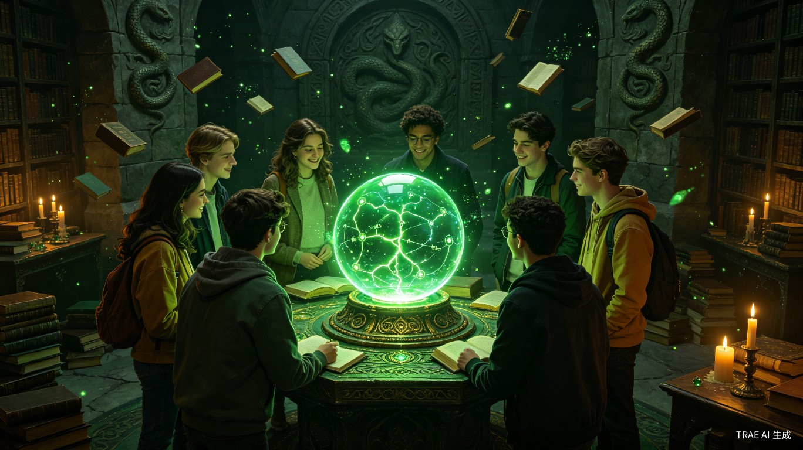
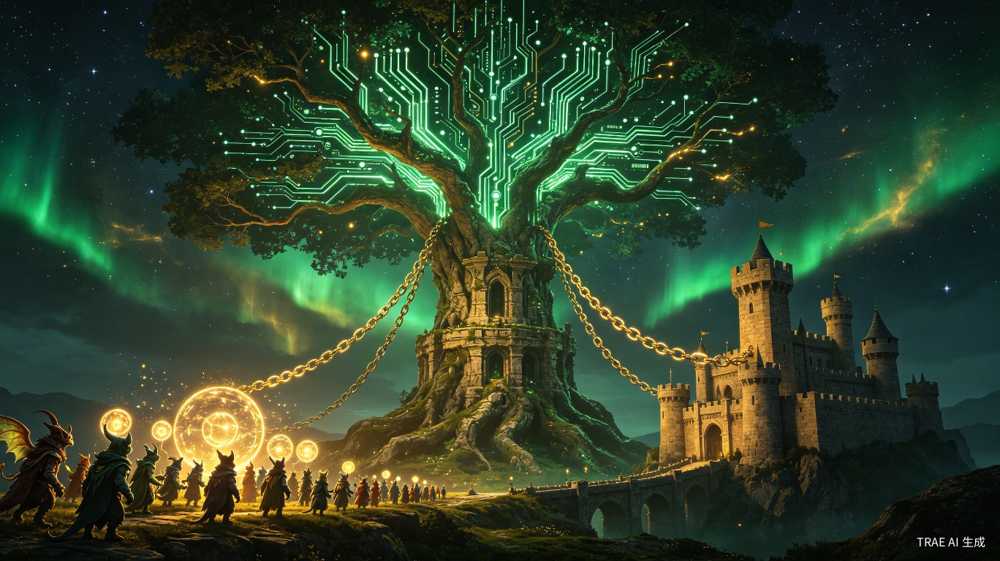

ForkLife 是一款基于大语言模型的对话式人生推演应用。它借鉴代码版本控制中 "Fork" 分支的理念，让用户能够在安全的虚拟环境中，低成本地探索过去与未来的多元可能性。
ForkLife 主要面向 18-30 岁的学生群体及职场新人——他们正处于人生路径的关键分叉口，对未来的困惑与探索欲最为强烈。

ForkLife 不仅是一款面向消费者的创新产品，更具备深远的商业延展性与积极的社会意义。

分阶段推进产品落地，以最小成本验证核心假设，逐步扩展商业边界。
| 阶段 | 核心目标 | 关键指标 | 预估周期 |
|---|---|---|---|
| MVP 验证 | 验证需求，打磨核心交互 | 日活 1,000+，留存率 >30% | 1-2 个月 |
| 体验升级 | 提升付费转化与用户体验 | 付费率 3-5%，NPS >40 | 2-4 个月 |
| 多端覆盖 | 扩大用户规模与品牌认知 | 总用户 50 万+，月活 10 万+ | 4-6 个月 |
| B端拓展 | 建立可持续商业模式 | B端客户 50+，ARR 破百万 | 6-12 个月 |
大语言模型在逻辑推理、角色扮演与长文本生成方面已达到可用阈值，使得「人生推演」从概念变为可行产品。API 成本持续下降，让创新应用的边际成本趋近于零。
后疫情时代，年轻群体面临就业、婚恋、置业等多重压力，对「决策辅助」与「心理慰藉」的需求空前强烈。现有工具要么过于严肃（心理咨询），要么过于娱乐（纯游戏），中间地带存在空白。